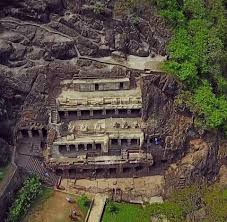

Undavalli Caves
The Undavalli Caves are an example of Indian rock-cut architecture and are located in the Guntur district of the Indian state of Andhra Pradesh.
Location: Undavalli, Guntur, Andhra Pradesh, India
Ticket Price: INR 10 for Indian citizens, INR 100 for foreign tourists
Transportation: Accessible by road, located approximately 6 km from Vijayawada.